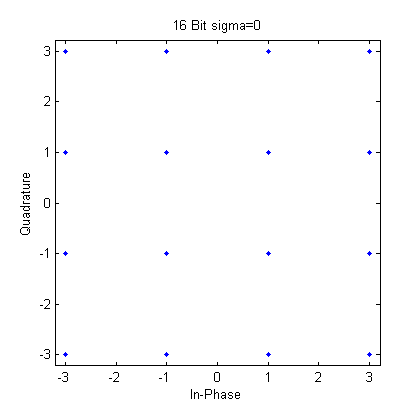
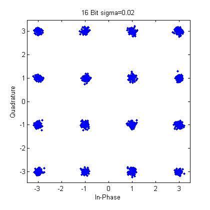
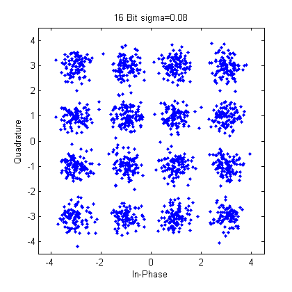
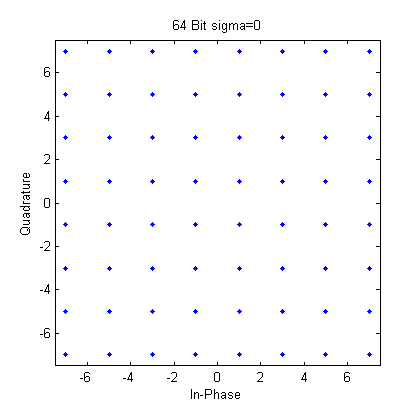
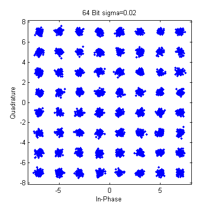
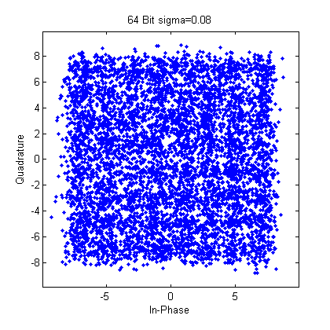
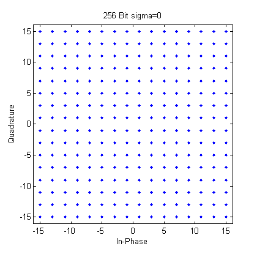
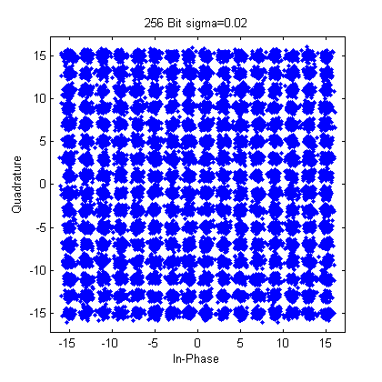
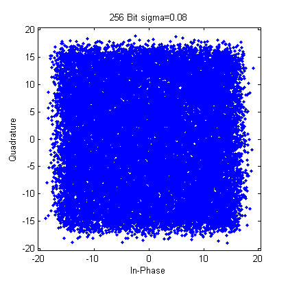

Contents
clc;
clear all;
m=4;
L=16;
m64=6;
L64=64;
m256=8;
L256=256;
N=100;
Generate Random Sequences of Bits
for Nu = 1:N
bsubk(:,:,Nu)=randi([0 1],m,L);
end
bk=reshape(bsubk,N*L,m);
for Nu = 1:N
bsubk64(:,:,Nu)=randi([0 1],m64,L64);
end
bk64=reshape(bsubk64,N*L64,m64);
for Nu = 1:N
bsubk256(:,:,Nu)=randi([0 1],m256,L256);
end
bk256=reshape(bsubk256,N*L256,m256);
Convert Bit Sequence into Symbol sized Integer Sequence
for Nu=1:N*L
msubk(Nu)=binvec2dec(bk(Nu,:));
end
for Nu=1:N*L64
msubk64(Nu)=binvec2dec(bk64(Nu,:));
end
for Nu=1:N*L256
msubk256(Nu)=binvec2dec(bk256(Nu,:));
end
Convert Integer Symbol Stream into Complex Symbol-Mapped Values(Xsubk)
OFDMmod=modem.qammod('M',L,'SymbolOrder','User-defined');
OFDMmod.SymbolMapping = [6 4 12 14 7 5 13 15 3 1 9 11 2 0 8 10];
OFDMmod.InputType = 'integer';
Xsubk = modulate(OFDMmod,msubk);
Xk=reshape(Xsubk, [N L]);
OFDMmod64=modem.qammod('M',L64,'SymbolOrder','gray');
OFDMmod64.InputType = 'integer';
Xsubk64 = modulate(OFDMmod64,msubk64);
Xk64=reshape(Xsubk64, [N L64]);
OFDMmod256=modem.qammod('M',L256,'SymbolOrder','gray');
OFDMmod256.InputType = 'integer';
Xsubk256 = modulate(OFDMmod256,msubk256);
Xk256=reshape(Xsubk256, [N L256]);
Use The Inverse Fast Fourer Transform to Create OFDM Transmitted Signal
for Nu=1:N
ifftout(Nu,:)=ifft(Xk(Nu,:),L);
end
for Nu=1:N
ifftout64(Nu,:)=ifft(Xk64(Nu,:),L64);
end
for Nu=1:N
ifftout256(Nu,:)=ifft(Xk256(Nu,:),L256);
end
Inject Gaussian White Noise Representing Noise During Propogation
for Nu=1:N
ifftwnoisesigmapt02(Nu,:)=ifftout(Nu,:)+randn(1,16)*.02+randn(1,16)*.02*i;
end
for Nu=1:N
ifftwnoisesigmapt08(Nu,:)=ifftout(Nu,:)+randn(1,16)*.08+randn(1,16)*.08*i;
end
for Nu=1:N
ifftwnoisesigmapt0264(Nu,:)=ifftout64(Nu,:)+randn(1,64)*.02+randn(1,64)*.02*i;
end
for Nu=1:N
ifftwnoisesigmapt0864(Nu,:)=ifftout64(Nu,:)+randn(1,64)*.08+randn(1,64)*.08*i;
end
for Nu=1:N
ifftwnoisesigmapt02256(Nu,:)=ifftout256(Nu,:)+randn(1,256)*.02+randn(1,256)*.02*i;
end
for Nu=1:N
ifftwnoisesigmapt08256(Nu,:)=ifftout256(Nu,:)+randn(1,256)*.08+randn(1,256)*.08*i;
end
Use The Fast Fourier Transform to Convert Received Signal to Symbol Map
for Nu=1:N
fftout(Nu,:)=fft(ifftout(Nu,:),L);
end
fos0=reshape(fftout,1,N*L);
scatterplot(fos0)
title('16 Bit sigma=0')
for Nu=1:N
fftoutsigpt02(Nu,:)=fft(ifftwnoisesigmapt02(Nu,:),L);
end
fos02=reshape(fftoutsigpt02,1,N*L);
scatterplot(fos02)
title('16 Bit sigma=0.02')
for Nu=1:N
fftoutsigpt08(Nu,:)=fft(ifftwnoisesigmapt08(Nu,:),L);
end
fos08=reshape(fftoutsigpt08,1,N*L);
scatterplot(fos08)
title('16 Bit sigma=0.08')
for Nu=1:N
fftout64(Nu,:)=fft(ifftout64(Nu,:),L64);
end
fos064=reshape(fftout64,1,N*L64);
scatterplot(fos064)
title('64 Bit sigma=0')
for Nu=1:N
fftoutsigpt0264(Nu,:)=fft(ifftwnoisesigmapt0264(Nu,:),L64);
end
fos0264=reshape(fftoutsigpt0264,1,N*L64);
scatterplot(fos0264)
title('64 Bit sigma=0.02')
for Nu=1:N
fftoutsigpt0864(Nu,:)=fft(ifftwnoisesigmapt0864(Nu,:),L64);
end
fos0864=reshape(fftoutsigpt0864,1,N*L64);
scatterplot(fos0864)
title('64 Bit sigma=0.08')
for Nu=1:N
fftout256(Nu,:)=fft(ifftout256(Nu,:),L256);
end
fos0256=reshape(fftout256,1,N*L256);
scatterplot(fos0256)
title('256 Bit sigma=0')
for Nu=1:N
fftoutsigpt02256(Nu,:)=fft(ifftwnoisesigmapt02256(Nu,:),L256);
end
fos02256=reshape(fftoutsigpt02256,1,N*L256);
scatterplot(fos02256)
title('256 Bit sigma=0.02')
for Nu=1:N
fftoutsigpt08256(Nu,:)=fft(ifftwnoisesigmapt08256(Nu,:),L256);
end
fos08256=reshape(fftoutsigpt08256,1,N*L256);
scatterplot(fos08256)
title('256 Bit sigma=0.08')
        
Demodulate Symbol-Mapped Values to an Integer Stream
OFDMdemod=modem.qamdemod('M',L,'SymbolOrder','User-defined');
OFDMdemod.SymbolMapping = [6 4 12 14 7 5 13 15 3 1 9 11 2 0 8 10];
OFDMdemod.OutputType = 'integer';
dmod0 = demodulate(OFDMdemod,fos0);
dmod0 = dmod0';
for Nu=1:N*L
test0(Nu,:)=dec2binvec(dmod0(Nu),m);
end
dmod02 = demodulate(OFDMdemod,fos02);
dmod02 = dmod02';
for Nu =1:N*L
test02(Nu,:)=dec2binvec(dmod02(Nu),m);
end
dmod08 = demodulate(OFDMdemod,fos08);
dmod08 = dmod08';
for Nu =1:N*L
test08(Nu,:)=dec2binvec(dmod08(Nu),m);
end
OFDMdemod64=modem.qamdemod('M',L64,'SymbolOrder','gray');
OFDMdemod64.OutputType = 'integer';
dmod064 = demodulate(OFDMdemod64,fos064);
dmod064 = dmod064';
for Nu=1:N*L64
test064(Nu,:)=dec2binvec(dmod064(Nu),m64);
end
dmod0264 = demodulate(OFDMdemod64,fos0264);
dmod0264 = dmod0264';
for Nu=1:N*L64
test0264(Nu,:)=dec2binvec(dmod0264(Nu),m64);
end
dmod0864 = demodulate(OFDMdemod64,fos0864);
dmod0864 = dmod0864';
for Nu=1:N*L64
test0864(Nu,:)=dec2binvec(dmod0864(Nu),m64);
end
OFDMdemod256=modem.qamdemod('M',L256,'SymbolOrder','gray');
OFDMdemod256.OutputType = 'integer';
dmod0256 = demodulate(OFDMdemod256,fos0256);
dmod0256 = dmod0256';
for Nu=1:N*L256
test0256(Nu,:)=dec2binvec(dmod0256(Nu),m256);
end
dmod02256 = demodulate(OFDMdemod256,fos02256);
dmod02256 = dmod02256';
for Nu=1:N*L256
test02256(Nu,:)=dec2binvec(dmod02256(Nu),m256);
end
dmod08256 = demodulate(OFDMdemod256,fos08256);
dmod08256 = dmod08256';
for Nu=1:N*L256
test08256(Nu,:)=dec2binvec(dmod08256(Nu),m256);
end
Use Results to Calculate the Bit Error Rates
BitErrorRate16BitwSigma0=sum(sum(xor(bk,test0)))/(N*L*m)
BitErrorRate16BitwSigmaPt02=sum(sum(xor(bk,test02)))/(N*L*m)
BitErrorRate16BitwSigmaPt08=sum(sum(xor(bk,test08)))/(N*L*m)
BitErrorRate64BitwSigma0=sum(sum(xor(bk64,test064)))/(N*L64*m64)
BitErrorRate64BitwSigmaPt02=sum(sum(xor(bk64,test0264)))/(N*L64*m64)
BitErrorRate64BitwSigmaPt08=sum(sum(xor(bk64,test0864)))/(N*L64*m64)
BitErrorRate256BitwSigma0=sum(sum(xor(bk256,test0256)))/(N*L256*m256)
BitErrorRate256BitwSigmaPt02=sum(sum(xor(bk256,test02256)))/(N*L256*m256)
BitErrorRate256BitwSigmaPt08=sum(sum(xor(bk256,test08256)))/(N*L256*m256)
BitErrorRate16BitwSigma0 =
0
BitErrorRate16BitwSigmaPt02 =
0
BitErrorRate16BitwSigmaPt08 =
0.0013
BitErrorRate64BitwSigma0 =
0
BitErrorRate64BitwSigmaPt02 =
0
BitErrorRate64BitwSigmaPt08 =
0.0339
BitErrorRate256BitwSigma0 =
0
BitErrorRate256BitwSigmaPt02 =
4.6387e-04
BitErrorRate256BitwSigmaPt08 =
0.1052